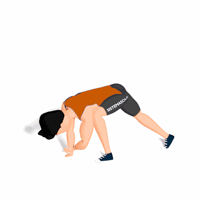

Alongamento Spider-Man

Conhecido pelos profissionais como o "Melhor alongamento do mundo", o exercício trabalha a mobilidade dos flexores do quadril, como também todo o corpo de forma integrada.
Ficha Técnica
Tipo: Alongamento
Grupo Muscular: Corpo
Aparelho: Nenhum
Músculos: Nenhum
Como realizar
- Fique em posição de flexão de braços, essa é sua posição inicial;
- Avance a perna direita até ficar ao lado do braço direito;
- Levante o braço direito do solo e realize uma rotação do tronco levemente para esquerda e depois para a direita levando o braço para cima;
- Mantenha nessa posição por alguns segundos e retorne a posição inicial;
- Agora, repita os movimentos com a perna e braço esquerdo.
 RC STORE
RC STORE